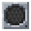

Control and facility: pages
Control and facility
Control and facility
The blocks that connect a network to the world around it - redstone in and out, PLCs, screens, lights, alarms and sound.
The blocks in this section let a network do things in the world and react to it. Most of them are devices on a network that you drive from the Terminal OS with ELCL, but several also work on their own from plain redstone.
| Block | What it does | Needs a network? |
|---|---|---|
| Six redstone channels, one per face, that ELCL reads and drives | Yes | |
| Runs one ELCL program over and over, with its own redstone faces, sensor modules and green screens | No (it can join one) | |
| Merges into wall screens that show text, gauges, graphs, tables and images; touching one fires an event | Yes | |
| Cage Lights | Lamps in 16 colours, switched by redstone or the network | No |
| Alarm Strobes | Flashing beacons with six siren tones | No |
 Speaker | Plays audio files, notes and MIDI files (and, if the server allows it, web audio) | No |
Reading order#
- Control Interface: the simplest way to get redstone into and out of ELCL.
- Programmable Logic Controller: a small controller that runs a program on its own, with or without a network.
- Display Panels: building screens and filling them.
- Cage Lights and Alarm Strobes: Cage Lights and Alarm Strobes.
- Speakers: Speakers and where their audio comes from.
The ELCL side of all of these (the commands, triggers and example programs) is on Redstone, PLCs and signals from ELCL and the command reference. Server owners will want Folders on disk (where audio and image files go) and Performance and limits (the limits on PLCs, screens and audio).
Permissions in short#
On a network with a Firewall, opening these blocks' settings screens needs the Firewall's BUILD permission. So do the ELCL commands that drive redstone outputs, PLCs, lights, strobes and speakers; reading (RTVRSIN, a PLC's sensors) needs VIEW. The Display Panel commands need no permission (a screen's own configuration screen does). A block on no network is open to everyone, except a PLC when plc.plcOpenToAnyone is off.